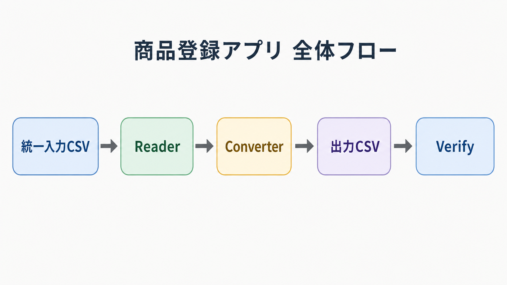
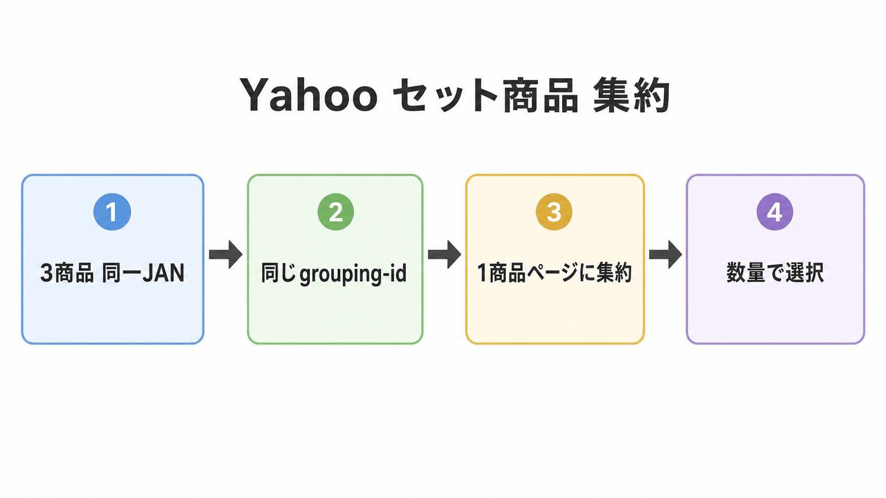
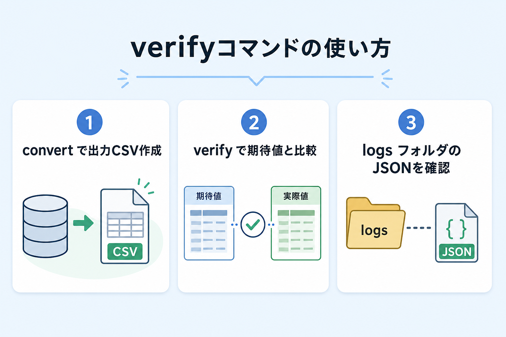

商品登録アプリ Phase 1 詳細設計書
| 項目 | 値 |
|---|---|
| 作成日 | 2026-05-13 |
| 対象 | Phase 1 CSV 出力 CLI ツール (product-register) |
| 状態 | 実装完了・テスト 102 件パス |
1. アーキテクチャ概要

1.1 全体フロー
[統一入力CSV (71列)]
↓ reader.py (CSV → ProductInput list)
[ProductInput オブジェクト]
↓ converters/ (各モール用 Converter で変換)
[dict のリスト (モール別フォーマット)]
↓ writers/csv_writer.py
[各モール用 CSV ファイル]
↓ verify/diff_checker.py (期待値CSVと比較)
[構造化 JSON 差分ログ]
1.2 技術スタック
- 言語: Python 3.13
- CLI: click
- データバリデーション: Pydantic v2
- テスト: pytest（102 件パス）
- Excel 読み込み: openpyxl（Phase 2 で使用予定）
1.3 ディレクトリ構成
商品登録アプリ作成/
├── pyproject.toml # プロジェクト設定・依存管理
├── src/product_register/
│ ├── __init__.py
│ ├── __main__.py # python -m product_register エントリ
│ ├── cli.py # CLI (convert / verify コマンド)
│ ├── models.py # ProductInput データモデル (71フィールド)
│ ├── reader.py # CSV 読み込み + bool 変換
│ ├── converters/
│ │ ├── base.py # Converter 基底クラス
│ │ ├── rakuten.py # 楽天 462 列対応
│ │ ├── ne.py # NE 単品/セット分離
│ │ ├── yahoo.py # Yahoo 85 列 + grouping 集約
│ │ └── shopify.py # Shopify 58 列 + 画像複数行展開
│ ├── writers/csv_writer.py # UTF-8-SIG CSV 出力
│ ├── config/
│ │ ├── column_filter.py # 楽天列フィルタ
│ │ ├── image_url.py # 画像 URL 自動生成
│ │ ├── master_data.py # メーカーコードマスタ
│ │ └── category_mapping.py # 楽天→Yahoo カテゴリマッピング
│ └── verify/
│ ├── diff_checker.py # 複合キー対応差分比較
│ ├── hint_enricher.py # ドメイン知識 hint 生成
│ └── reporter.py # 構造化 JSON 出力
├── config/
│ ├── rakuten_columns.json
│ └── master/
│ ├── maker_codes.csv
│ └── category_mapping.csv # 楽天→Yahoo 86 ジャンル
├── tests/ # 102 件 (pytest)
│ ├── conftest.py
│ ├── fixtures/
│ │ ├── input_sample.csv # 7 商品サンプル
│ │ └── expected/
│ │ ├── rakuten_normal_item.csv
│ │ ├── ne_single.csv
│ │ ├── ne_set.csv
│ │ ├── yahoo.csv # 85 列 grouping 対応
│ │ └── shopify.csv
│ ├── test_models.py # 7 件
│ ├── test_reader.py # 7 件
│ ├── test_base_converter.py
│ ├── test_csv_writer.py
│ ├── test_master_data.py
│ ├── test_column_filter.py
│ ├── test_rakuten.py
│ ├── test_ne.py
│ ├── test_yahoo.py # 31 件 (grouping/variation/image)
│ ├── test_shopify.py
│ ├── test_verify.py
│ └── test_integration.py # 8 件 (各モール構造+grouping整合性)
└── docs/superpowers/ # 設計書・計画書 (git 追跡)
├── specs/
└── plans/
2. データモデル: ProductInput
src/product_register/models.py の Pydantic モデル。71 フィールドで統一入力を表現。
2.1 必須フィールド (5 件)
ne_code: str # 商品コード "t002-2542-1"
jan_code: str # 13桁 JAN (バリデーション: 13桁数字)
maker_code: str # メーカーコード "t002"
product_type: str # "単品" or "セット商品"
quantity: int # 数量
product_name: str
display_name: str
tax_rate: int # 8 or 10 (バリデーションで強制)
selling_price: int
shipping_type: str
image_count: int
delivery_method: int
lead_time: int
mall_category_id: str
2.2 Yahoo セット集約用フィールド（Phase 1 で追加）
unit: str = "" # 単位 ("本", "袋", "個", "枚")
yahoo_grouping_enabled: bool = False # grouping 有効フラグ
yahoo_variation_title: str = "" # "数量" などのバリエーション見出し
2.3 バリデーション
| フィールド | バリデーション |
|---|---|
tax_rate |
8 または 10 以外は ValueError |
jan_code |
13 桁の数字のみ |
| その他 | Pydantic の自動型変換に任せる |
2.4 派生プロパティ
is_single → product_type == "単品"
is_set → product_type == "セット商品"
get_image_urls() → 設定済み画像URLのリスト
3. リーダー: reader.py
CSV を ProductInput リストに変換。bool 変換ヘルパー _parse_bool を含む。
3.1 _parse_bool の挙動
| CSV 値 | 戻り値 |
|---|---|
"TRUE", "True", "true", "1", "YES" |
True |
"FALSE", "false", "0", "", "NO" 他 |
False |
3.2 read_input_csv の処理フロー
- CSV を
csv.DictReaderで読み込み（UTF-8-SIG） - 全フィールドを文字列として cleaned dict に格納
- 数値フィールド (
quantity等 7 件) を int に変換 - bool フィールド (
yahoo_grouping_enabled) を_parse_boolで bool に変換 - ProductInput を構築（Pydantic がバリデーション）
3.3 後方互換性
yahoo_grouping_enabled 列が無い既存 CSV を読み込んでも、Pydantic のデフォルト値 False が適用される（test_read_csv_backward_compat で検証済み）。
4. 各モール Converter の設計
4.1 楽天 Converter
src/product_register/converters/rakuten.py
| 観点 | 仕様 |
|---|---|
| 出力フォーマット | normal-item.csv（最大 462 列） |
| 親子判定 | 単品 → 属性=親、セット → 属性=子 |
| 商品管理番号 | base_code (= ne_code から数量を除く部分) でグループ化、親子同梱 |
| 消費税率変換 | tax_rate / 100 → "0.1" / "0.08" |
| ソート | 商品管理番号 昇順 → 属性で親が先 |
| 画像 URL | image_url_1〜20 が空なら image_count と ne_code から自動生成 |
| 属性単位の 0 置換 | attribute_unit_* が "0" のとき空文字に置換 |
| 列選択フィルタ | config/rakuten_columns.json の enabled 列のみ出力 |
4.2 NE Converter
src/product_register/converters/ne.py
| 観点 | 仕様 |
|---|---|
| 出力 | 単品用 CSV + セット用 CSV の 2 ファイル |
| 主要マッピング | syohin_code ← ne_code / syohin_name ← product_name / baika_tnk ← selling_price / sire_code ← maker_code / tax_rate ← tax_rate / genka_tnk ← cost_price / image_url_http ← 画像URL |
| 代表商品コード | 単品は自身、セット商品は親コード |
4.3 Yahoo Converter（Phase 1 で全面書き直し）

src/product_register/converters/yahoo.py
出力フォーマット
| 観点 | 仕様 |
|---|---|
| カラム数 | 85 列（Yahoo 公式アップロードフォーマット） |
| カラム順 | 添付サンプル CSV docs/Yahoo/data_input202605122227.csv 完全準拠 |
| エンコーディング | UTF-8-SIG |
| 値が入る列（25 列） | path / name / code / original-price / price / headline / caption / explanation / sp-additional / ship-weight / taxable / jan / delivery / condition / product-category / display / lead-time-instock / lead-time-outstock / keep-stock / postage-set / taxrate-type / grouping-id / variation1-free-title / variation1-name / item-image-urls |
| 残り 60 列 | 全て空欄（Phase 2 以降で順次充足） |
grouping-id 生成ロジック
def _resolve_grouping_id(ne_code: str, enabled: bool) -> str:
if not enabled:
return ""
parts = ne_code.rsplit("-", 1)
if len(parts) == 2 and parts[1].isdigit():
return parts[0] # 末尾の純粋な数字を除去
return ne_code # S01 等の英字混じり末尾はそのまま
| 入力 ne_code | enabled | grouping-id |
|---|---|---|
t002-2542-1 |
True | t002-2542 |
t002-2542-10 |
True | t002-2542 |
t002-2542-S01 |
True | t002-2542-S01（trim せず） |
noni6 |
True | noni6（ハイフンなし） |
| 任意 | False | "" |
variation1-name 生成ロジック
def _build_variation_name(quantity: int, unit: str) -> str:
if quantity == 1:
return f"1{unit}" # "1袋" / "1本"
return f"{quantity}{unit}セット" # "5袋セット" / "10袋セット"
item-image-urls 生成ロジック
def _build_item_image_urls(ne_code: str, image_count: int) -> str:
if image_count <= 0:
return ""
base = "https://shopping.c.yimg.jp/lib/okimarumarket"
urls = [f"{base}/{ne_code}.jpg"] # 1枚目
urls += [f"{base}/{ne_code}_{i}.jpg" for i in range(2, image_count + 1)] # N≥2
return ";".join(urls)
警告ログ
yahoo_grouping_enabled=True かつ unit="" のとき WARNING ログを出力（実装止めないが運用通知）。
4.4 Shopify Converter
src/product_register/converters/shopify.py
| 観点 | 仕様 |
|---|---|
| 出力フォーマット | Shopify CSV インポート（58 列） |
| 画像複数行展開 | 1 画像 = 1 行、Image Position 1 始まり |
| 1 行目 | 本体データ + 画像 1 枚目 |
| 2 行目以降 | Handle + Image Src + Image Position のみ |
| Handle | ne_code |
| マーケット列 | Included / 日本 = TRUE、Price / 日本 / Price / 国際 を埋める |
| Status | active 固定 |
5. CLI コマンド
5.1 convert — 統一入力 CSV から各モール CSV を生成
python -m product_register convert tests/fixtures/input_sample.csv -o ./output/
オプション:
- --mall {rakuten|ne|yahoo|shopify|all} (デフォルト: all)
- -o, --output <dir> (デフォルト: ./output/)
出力ファイル: rakuten_normal_item.csv, ne_single.csv, ne_set.csv, yahoo.csv, shopify.csv
5.2 verify — 出力 CSV と期待値 CSV の差分を構造化ログ出力

python -m product_register verify ./output/ ./tests/fixtures/expected/ --log ./logs/
出力: logs/verify_<mall>_<timestamp>.json
5.3 verify JSON ログのスキーマ
{
"timestamp": "2026-05-13T00:01:23",
"mall": "yahoo",
"summary": {
"total_rows": 7,
"matched_rows": 7,
"mismatched_rows": 0,
"missing_rows": 0,
"extra_rows": 0
},
"mismatches": [
{
"row": 1,
"product_code": "n019-0250-1",
"diffs": [
{
"column": "variation1-name",
"expected": "1袋",
"actual": "1個",
"converter_file": "src/product_register/converters/yahoo.py",
"hint": "unit が誤っている可能性"
}
]
}
],
"missing_keys": [],
"extra_keys": []
}
6. 差分検証エンジン (verify/)
src/product_register/verify/diff_checker.py
6.1 compare_csv の比較キー
| モール | 比較キー |
|---|---|
| 楽天 | 商品管理番号（商品URL） 単一キー |
| NE 単品 | syohin_code |
| NE セット | set_syohin_code |
| Yahoo | code |
| Shopify | ["Handle", "Image Position"] 複合キー（画像複数行対応） |
6.2 hint_enricher のドメイン知識
verify/hint_enricher.py に既知パターンを登録（消費税率の変換漏れ、属性マッピング、Yahoo grouping 抜け等）。差分発生時に「修正のヒント」を JSON に同梱する。
7. テスト戦略
7.1 テスト全体像 (102 件)
| ファイル | 件数 | 内容 |
|---|---|---|
test_models.py |
7 | Pydantic バリデーション、3 列追加検証 |
test_reader.py |
7 | CSV 読み込み、_parse_bool、後方互換 |
test_base_converter.py |
2 | Converter 基底クラスの ABC |
test_csv_writer.py |
3 | UTF-8-SIG 出力 |
test_master_data.py |
2 | メーカーコードマスタ読み込み |
test_column_filter.py |
3 | 楽天 462 列フィルタ |
test_rakuten.py |
13 | 親子判定、税率変換、ソート |
test_ne.py |
8 | 単品/セット分離、フィールドマッピング |
test_yahoo.py |
31 | 85列、grouping、variation1、item-image-urls、警告 |
test_shopify.py |
14 | 画像複数行展開、Handle、マーケット |
test_verify.py |
4 | 差分検出、複合キー、JSON 出力 |
test_integration.py |
8 | 各モール構造、Yahoo grouping 整合性 |
| 合計 | 102 | all pass |
7.2 統合テスト（Yahoo grouping 整合性）
test_yahoo_grouping_consistency で以下を検証:
# n019-0250 グループ
chinsuko = [r for r in rows if r["grouping-id"] == "n019-0250"]
assert len(chinsuko) == 3
assert {r["variation1-name"] for r in chinsuko} == {"1袋", "5袋セット", "10袋セット"}
assert len({r["path"] for r in chinsuko}) == 1 # path 同一
7.3 期待値 CSV の作り方
| モール | 期待値の根拠 |
|---|---|
| 楽天 | 既存 Excel テンプレートの「楽天用商品登録データ」シート |
| NE | 既存 Excel の「商品ページ生成_単品/セット商品」シート |
| Yahoo | Yahoo 公式アップロードフォーマット例 (data_input202605122227.csv) のパターンに準じて手動作成 |
| Shopify | 既存 Excel の「shopify変換」シート |
8. Phase 1 でやらなかったこと（Phase 2 対象）
| 項目 | 理由 |
|---|---|
Excel 読み込み (read_input_excel) |
Phase 1 は CSV のみで十分 |
Yahoo variation2〜5, spec1〜10, brand-code, abstract 等 |
今回のスコープは grouping のみ |
| 異種セット (-S01) の集約 | grouping-id を ne_code そのまま使用、Phase 2 で別途設計 |
| API 直接登録 | Phase 2 のメインスコープ |
| 画像アップロード自動化 | Phase 2 |
| Web UI | Phase 2 |
9. 重要な設計判断と背景
9.1 なぜ Yahoo Converter を 42 列 → 85 列に拡張したか
直近 c3ea62e で 42 列で実装したが、セット商品の集約が不可能だった。Yahoo 公式アップロードフォーマット (85 列) には grouping-id / variation1-* / item-image-urls 列があり、これらが必須。
9.2 なぜ variation1-spec-id を空のままにするか
docs/Yahoo/04-オプション・バリエーション設定.md には「バリエーションスペックIDは商品のスペック設定に存在するIDのみ指定可能」とあるが、Yahoo 公式 CSV 例 (data_input202605122227.csv) の 4 行で variation1-spec-id 空 + variation1-free-title + variation1-name のみで動作実績がある「フリータイトル方式」を採用。
9.3 なぜ yahoo_grouping_enabled をフラグ列にしたか
入力者が商品ごとに「集約する/しない」を選択できる柔軟性を確保。フラグ列なら CSV の TRUE/FALSE で済み、grouping-id 自体は Converter が自動生成するので手作業が減る。
9.4 なぜ _resolve_grouping_id を rsplit + isdigit() で実装したか
正規表現 ^(.+)-(\d+)$ だと t002-2542-S01 の末尾 01 にもマッチして誤分割される。rsplit("-", 1) + parts[1].isdigit() なら S01 は isdigit() == False で正しく弾ける。